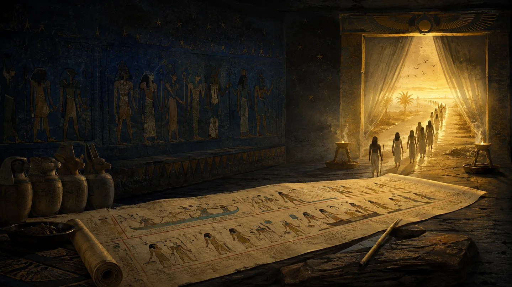
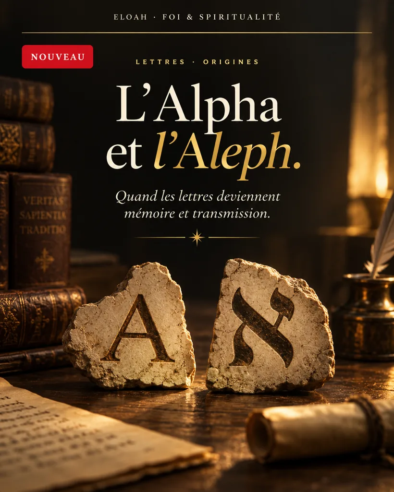
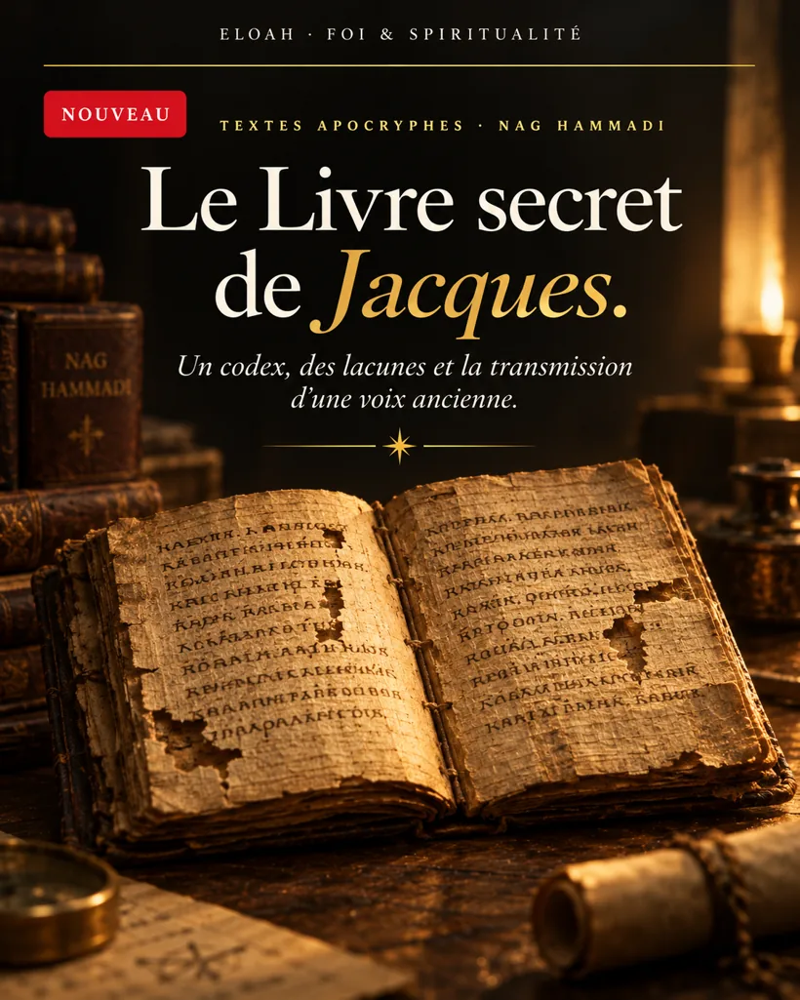
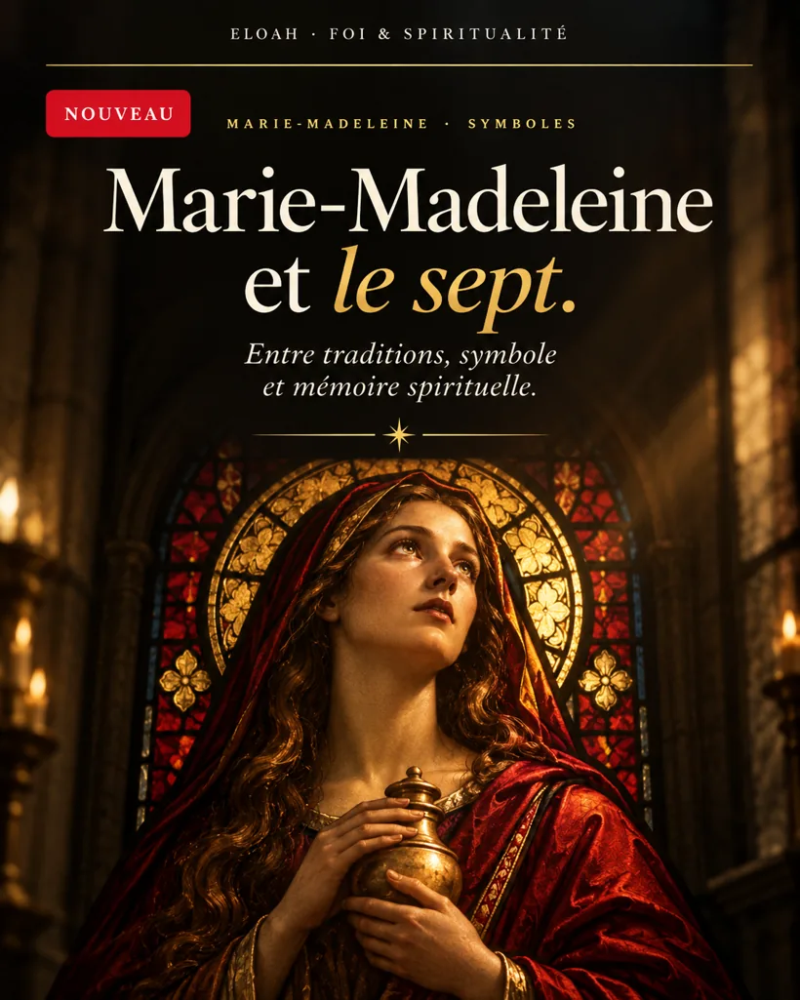

Les textes apocryphes.
Remonter les manuscrits. Confronter les traditions. Explorer les écrits anciens sans leur attribuer des certitudes qu'ils ne portent pas.
Évangiles d'enfance, paroles, lettres, apocalypses et codices. Un catalogue de références documentaires, distinct d'une collection de traductions intégrales.

Trois enquêtes pour commencer.
Chaque dossier possède son texte intégral, ses questions et ses références. Ces visuels sont des créations éditoriales.

Enfance, alphabets et traditions.
Interroger l'école de Zachée, les récits d'enfance et la transmission des lettres.
Lire l'enquête ↗
Le Livre secret de Jacques.
Lire un codex copte, ses lacunes, son récit et ses éditions critiques.
Lire le dossier ↗
Marie, Pierre, André et Lévi.
Étudier les tensions de transmission et d'autorité dans l'Évangile de Marie.
Lire l'étude ↗Choisir une tradition.
Chaque famille correspond à un ensemble du corpus. Les regroupements ne suppriment pas les recouvrements entre œuvres et versions.
Explorer les notices.
Recherche par titre, cote, famille documentaire ou type de texte.
Manuscrits, datations, témoins, éditions scientifiques et questions ouvertes.
Sources & méthode
Répertoire NASSCAL e-Clavis (CC BY 4.0), Coptic Gnostic Library (Brill) et Online Critical Pseudepigrapha. Les notices ne remplacent pas les photographies des témoins, les transcriptions ni les éditions critiques. Voir toutes les publications ELOAH ↗